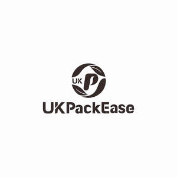

Trade Mark Journal No.2025/013 28 March 2025
UK00004172410 12 March 2025 (16,17,21)

- Class 16
- Cardboard containers; Containers of cardboard for packaging; Plastic bags for packaging; Biodegradable paper pulp-based to-go containers for food; Plastic bags for packaging ice; Containers of paper for packaging; Packaging containers of paper; Packaging wrappers of plastic; Packing cardboard containers; Packing containers of cardboard; Paper containers; Plastic food storage bags for household use; Bags for packaging made of biodegradable plastic; Plastic sandwich bags; Cardboard shipping containers; Plastic bags for wrapping and packaging; Food waste bags of biodegradable plastic for household use; Corrugated containers; Garbage bags of plastic; Packaging materials of plastic for sandwiches; Industrial packaging containers of paper; Paper take-out cartons for food; Bags and articles for packaging, wrapping and storage of paper, cardboard or plastics; Plastic bags for wrapping; Dustbin liner bags of plastic; Food bags of paper or plastics; Containers for ice made of paper or cardboard; Plastic materials for packaging; Plastic foil for packaging; Foils of plastic for packaging; Plastic bags for packing; Plastic bags for household use; Plastic bin liners; Bags of bubble plastics for packaging; Food wrapping plastic film; Containers of paper for packaging purposes; Plastic bags for undergarment disposal; Pouches of plastic for wrapping; Cream containers of paper; Storage containers made of paper; Packaging boxes of paper; Paper bags for packaging; Packaging bags of paper; Bottle wrappers of cardboard or paper; Bottle wrappers of paper or cardboard; Paper boxes; Boxes of paper; Bags of paper for foodstuffs; Boxes of cardboard or paper; Boxes of paper or cardboard; Paper bags; Bags of paper; Paper lunch bags; Bottle envelopes of cardboard or paper; Bottle envelopes of paper or cardboard; Sandwich bags [paper]; Airtight packaging of paper; Labels of paper or cardboard; Paper pouches for packaging; Bags made of paper for packaging; Bags [envelopes, pouches] of paper or plastics, for packaging; Paper envelopes for packaging; Paper napkins; Napkins of paper; Paper cartons for delivering goods; Carrier bags of paper or plastic; Food waste bags of paper for household use; Bags for packaging made of biodegradable paper; Paper and cardboard; Garbage bags of paper or of plastics; Bags (Garbage -) of paper or of plastics; Collapsible boxes of paper; Paper gift boxes; Shopping bags of paper or plastic; Paper for use in the manufacture of tea bags; Absorbent sheets of paper or plastic for foodstuff packaging; Grocery paper; Paper gift bags; Paper wine gift bags; Paper bags for household use; Rubbish bags (made of paper or plastic materials); Paper; Paper knives being parts of paper cutters for office use; Labels of paper; Paper labels; Garbage bags of paper [for household use]; Placards of paper or cardboard; Bin liners of paper; Table napkins of paper; Napkins of paper (Table -); Paper table napkins; Serviettes of paper; Paper serviettes; Bulk paper; Paper shopping bags; Signboards of paper or cardboard; Boxes made of paper; Liners of paper for toilet boxes for domestic animals; Containers of card for packaging; Packaging containers of card; Industrial paper and cardboard; Paper bags and sacks; Paper for bags and sacks; Paper mail pouches; Paper egg cartons; Paperboard trays for packaging food; Greaseproof paper; Napkin paper; Stuffing of paper or cardboard; Bags of paper for roasting purposes; Kitchen paper; Hat boxes of paper; Paper for wrapping books; Recycled paper; Bags (Conical paper -); Conical paper bags; Paper party bags; Bags made of paper; Coin wrappers of paper; Packing paper; Shelf paper; Liners of paper for toilet trays for domestic animals; Decorations of paper for foodstuffs; Gunpowder wrapping paper; Tablemats of paper; Paper stock [printing paper]; Tablecloths of paper; Paper tablecloths; Paper luggage labels; Sandwich bags; Freezer bags; Food bag tape for freezer use; Plastic shopping bags; Plastic bags for disposable diapers; Plastic disposable diaper bags; Garbage bags of plastics [for household use]; Food wrappers; Sticky tape; Bookbinding tape; Paper tapes; Paper carton sealing tape; Gummed tape [stationery]; Adhesive tape cutters being stationery; Adhesive packaging tapes; Adhesive tape for stationery purposes; Tapes (adhesive -) [stationery]; Sealing tape for stationery use; Holders for adhesive tapes; Correcting tape for type; Dispensers (Adhesive tape -) [office requisites]; Adhesive tape dispensers [office requisites]; Double-sided adhesive tapes for household use; Automatic adhesive tape dispensers for office use; Double sided adhesive tapes for stationery use; Plastic wrap; Gift wrap; Plastic gift wrap; Metallic gift wrap; Paper gift wrap; Gift wrap paper; Paper gift wrap bows; Paper bows for gift wrap; Christmas gift wrap; Plastic foil for wrapping; Gift wraps; Gift wrapping foil; Plastic bubble film for wrapping; Gift wrap cards; Viscose sheets for wrapping; Plastic sheets for wrapping; Plastic bubble packs for wrapping; Bubble packs for wrapping; Plastic film for wrapping; Air bubble plastics for wrapping; Lining papers for wrapping; Sheets for wrapping made of plastic material; String dispensers for use in wrapping; Paper gift wrapping ribbons; Wrapping paper; Plastic films for wrapping; Foils of plastic for wrapping; Bubble packs (Plastic -) for wrapping or packaging; Plastic bubble packs for wrapping or packaging; Plastic sheets for wrapping and packaging; Adhesive plastic film for wrapping; Waterproofing film (Plastic -) for wrapping; Sheets of reclaimed cellulose for wrapping; Gift wrapping paper; Metallic gift wrapping paper; Transparent viscose wrapping film; Sheets for wrapping made of paper; Bows (Decorative -) for wrapping; Decorative wrapping paper; Brown paper for wrapping; Seaweed-based film for wrapping; Decorative paper bows for wrapping; Sheets of recycled cellulose for wrapping; Plastic cling film, extensible, for palletization; Film (Plastic cling -) extensible, for palletization; Wrapping materials made of cardboard; Plastic films for wrapping and packaging.
- Class 17
- Plastic padding for shipping containers; Padding materials of plastic for shipping containers; Packing materials of plastic for shipping containers; Heat sealable plastics for the manufacture of lids for containers; Rubber lids and caps [for industrial packaging containers]; Industrial packaging containers of rubber; Rubber stoppers [for industrial packaging containers]; Rubber stoppers for industrial packaging containers; Packing containers of rubber; Molded foam insulated container packing for commercial transportation; Rubber bags for merchandise packaging [envelopes or pouches]; Bags [envelopes, pouches] of rubber, for packaging; Bags of rubber for packaging; Packing products in the nature of bags [envelopes] of rubber; Duct tape; Masking tape; Gaffer tape; Strapping tape; Adhesive masking tape; Duct tapes; Electrical tape; Tape (Insulating -); Insulating tape; Masking tapes; Anti-corrosion tape; Anti-vibration tape; Carpet seam tape; Photographic splicing tape; Rubber tape for insulating; Insulating tape and band; Drywall joint tape; Electrical insulation tape; Masking tape for industrial use; Electrical insulating tape; Adhesive tapes for use with carpets; Electrical tapes; Foil tapes for insulation; Insulating tapes; Foil tapes for ventilation duct sealing; Carpet tape [other than for household use]; Adhesive anti-slip tape for flooring applications; Carpet seaming tapes; Pipe joint tape; Adhesive tapes for use in securing carpets; Foil tapes for heating duct sealing; Glazing tapes; Sealing tape for use with insulated glass; Self-adhesive tapes for packings; Adhesive tapes for use with floor coverings; Adhesive tapes, strips, bands and films; Adhesive tapes for industrial use; Cellulose acetate film used in the manufacture of pressure sensitive adhesive tape; Polypropylene foil, other than for wrapping; Viscose sheets, other than for wrapping; Film (Plastic -), not for wrapping; Plastic film, not for wrapping; Plastic film other than for wrapping; Plastic film, other than for wrapping; Polyurethane film, other than for wrapping; Polypropylene film, other than for wrapping; Plastic film for packing, cushioning or stuffing purposes [other than for wrapping]; Polyester sheets [other than for wrapping or packaging]; Waterproofing film (plastic -) [other than for wrapping]; Foil of regenerated cellulose, other than for wrapping; Cellulose (Foil of regenerated -), other than for wrapping; Splices of rubber for making up wire nets; Flexible hose of cotton with wire inserts; Polyester films [other than for wrapping or packaging]; Roll coverings of rubber; Flexible hose of cotton with wire braiding; Polypropylene films, other than for wrapping or packaging; Heat shrink joints; Rubber packing [padding]; Flexible hose of hemp with wire inserts; Polythene films [other than for wrapping or packaging].
- Class 21
- Plastic bowls [household containers]; Plastic containers for dispensing food to pets; Plastic containers for dispensing drink to pets; Foil food containers; Glass lids for industrial packaging containers; Glass containers; Plastic bottles; Industrial packaging containers of glass; Plastic buckets; Plastic bins [dustbins]; Food storage containers; Plastic cups; Drinks containers; Plastic lids for plant pots; Glass flasks [containers]; Reusable plastic water bottles sold empty; Lockable non-metal household containers for food; Industrial packaging containers of porcelain; Containers for beverages; Plastic plates; Insulated containers for beverage cans, for domestic use; Disposable lids for household containers; Planters of plastic; Plastic water bottles; Cups of paper or plastic; Waste paper baskets; Paper cups; Baskets for waste paper littering; Kitchen paper dispensers; Paper plates; Plates (Paper -); Paper cooking pots; Kitchen paper holders; Dispensers for paper towels; Trays of paper, for household purposes; Trays for domestic purposes, of paper; Thermal insulated tote bags for food or beverages; Thermal insulated bags for food or beverages; Insulated lunch bags; Thermal insulated containers for food or beverages; Thermally insulated containers for food; Thermal insulated containers for food or beverage; Double heat insulated containers for food; Foldable insulated food covers; Heat insulated containers for drinks; Beverages (Heat insulated containers for -); Insulated food cover domes; Insulated vacuum bottles; Cooking mesh bags; Heat insulated containers; Vacuum bottles [insulated flasks]; Isothermic bags; Insulated bottles [flasks]; Thermal insulated wrap for cans to keep the contents cold or hot; Cooking mesh bags, other than for microwaves; Cold packs for chilling food and beverages; Containers for bird food; Piping bags ; Pastry bags; Insulated flasks; Household containers for storing pet food; Heat retaining containers for food; Heat-insulated containers for beverages; Vacuum flasks for holding food; Microwave cooking bags; Bags for microwave cooking; Nylon mesh body cleansing puff; Drying boards for washed, starched and then stretched pieces of kimono (hari-ita).
dongxiao xuan